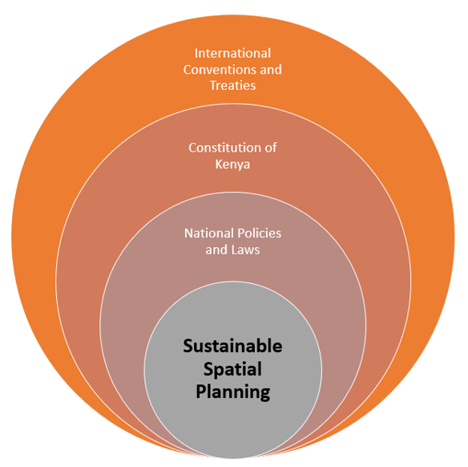
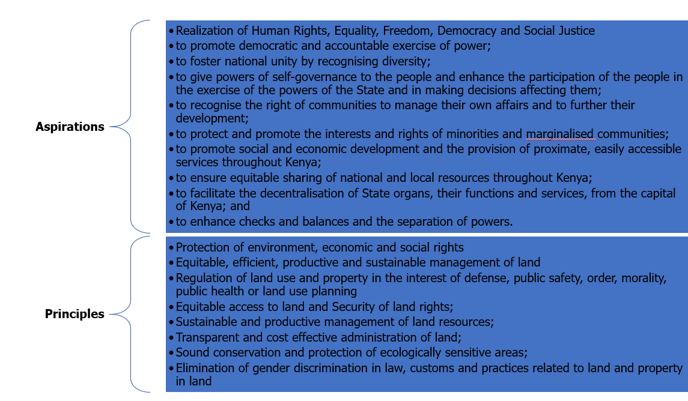

Spatial planning in Kenya operates within a comprehensive policy and legal framework aimed at guiding land use, development, and urbanization across the country. Here are key elements of the policy and legal context of spatial planning in Kenya:
Constitutional Provisions: The Constitution of Kenya, adopted in 2010, provides a strong foundation for spatial planning. It emphasizes sustainable development, equitable access to land, and the importance of public participation in decision-making processes related to land use and spatial planning.

National Development Plans: Kenya’s national development plans, such as Vision 2030, outline long-term development goals and strategies, including spatial planning objectives to guide the country’s growth and development.
Physical Planning Act (Cap 286): This legislation provides the legal framework for spatial planning in Kenya. It establishes the roles and responsibilities of various planning authorities, including the national government, county governments, and local planning committees. The Act outlines procedures for land use planning, zoning, and development control.
County Governments Act (2012): This Act decentralizes spatial planning functions to the county level, empowering county governments to prepare spatial plans that align with national policies and standards.
Spatial Planning Policies: The National Spatial Planning Policy Framework provides guidance on spatial planning principles, strategies, and priorities at the national level. County governments also develop their spatial planning policies and strategies to address local development needs and priorities.
County Spatial Planning Acts: Several counties in Kenya have enacted their own spatial planning legislation, such as the County Governments (Amendment) Act, to strengthen their planning capacities and align local development initiatives with national goals.
Environmental Laws and Regulations: Spatial planning in Kenya is closely linked to environmental conservation and management. Laws such as the Environmental Management and Coordination Act (EMCA) and the Physical and Land Use Planning Act (PLUPA) emphasize sustainable land use practices and environmental protection in spatial planning processes.
Public Participation Requirements: The policy and legal context of spatial planning emphasize public participation and community engagement in decision-making processes. Stakeholder consultations, public hearings, and community involvement are integral to the formulation and implementation of spatial plans.
In summary, the policy and legal context of spatial planning in Kenya is designed to promote sustainable development, equitable land use, and effective governance of urban and rural areas. The framework supports coordination among different levels of government and encourages citizen participation in shaping the future of Kenya’s built environment.
In addition to the domestic policy and legal framework, Kenya’s spatial planning is influenced by several international conventions and treaties that address sustainable development, environmental conservation, and land management. Some key international agreements that impact spatial planning in Kenya include:
Agenda 2030 and the Sustainable Development Goals (SDGs): Kenya, along with other UN member states, has committed to achieving the SDGs outlined in Agenda 2030. Spatial planning in Kenya aligns with these goals, particularly Goal 11 (Sustainable Cities and Communities), which emphasizes inclusive, safe, resilient, and sustainable urbanization.
New Urban Agenda: Adopted at the United Nations Conference on Housing and Sustainable Urban Development (Habitat III) in 2016, the New Urban Agenda provides a global framework for sustainable urban development. It emphasizes integrated and participatory spatial planning approaches to address urban challenges.
United Nations Framework Convention on Climate Change (UNFCCC): Kenya is a signatory to the UNFCCC and its related agreements. Spatial planning initiatives in Kenya often incorporate climate change adaptation and mitigation strategies to enhance resilience and reduce greenhouse gas emissions in urban and rural areas.
Convention on Biological Diversity (CBD): The CBD promotes the conservation of biodiversity and sustainable use of natural resources. Spatial planning in Kenya integrates biodiversity considerations to protect ecosystems, wildlife habitats, and ecological corridors.
Paris Agreement: Kenya is a party to the Paris Agreement, which aims to limit global temperature rise and enhance climate resilience. Spatial planning efforts in Kenya contribute to achieving the country’s climate targets by promoting low-carbon development and sustainable land use practices.
Ramsar Convention on Wetlands: Kenya is a party to the Ramsar Convention, which aims to conserve and wisely use wetlands. Spatial planning policies in Kenya address wetland conservation and sustainable management to preserve these vital ecosystems.
African Union Agenda 2063: Kenya aligns its spatial planning initiatives with the aspirations of Agenda 2063, which envisions a prosperous and integrated Africa. The agenda emphasizes spatial transformation, urban development, and infrastructure investment across the continent.
These international conventions and treaties provide a broader context for Kenya’s spatial planning efforts, encouraging alignment with global sustainability objectives and best practices. They underscore the interconnectedness of land use, environmental conservation, and socio-economic development, guiding Kenya’s approach to spatial planning for a more sustainable and resilient future.